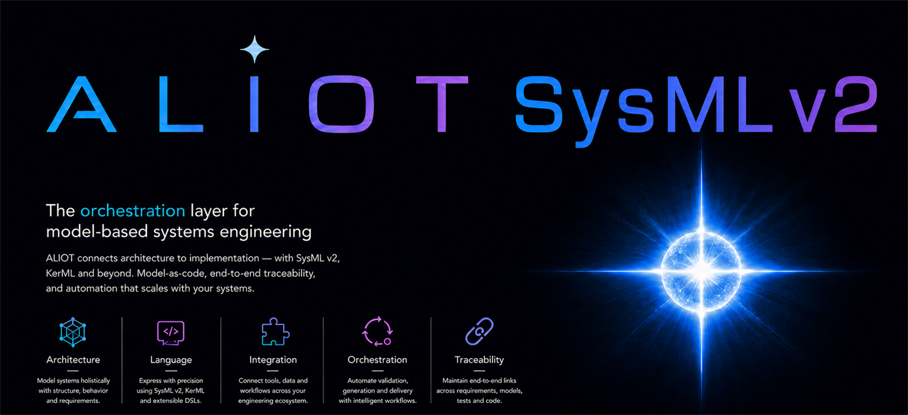
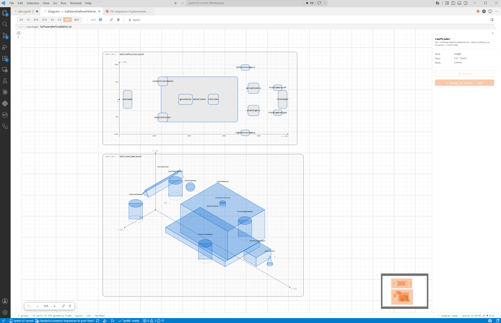
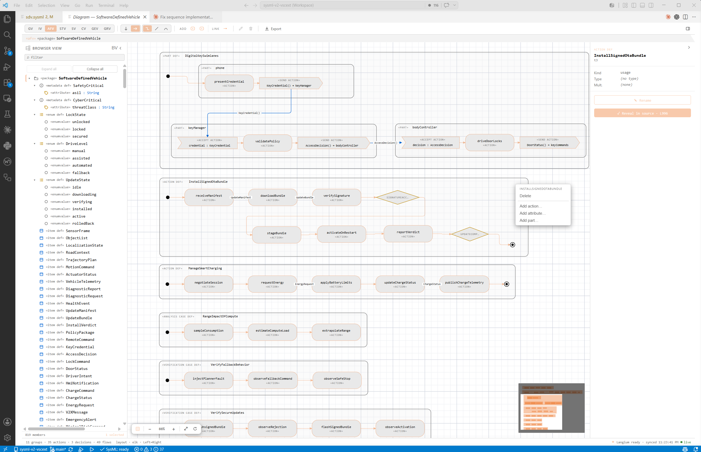
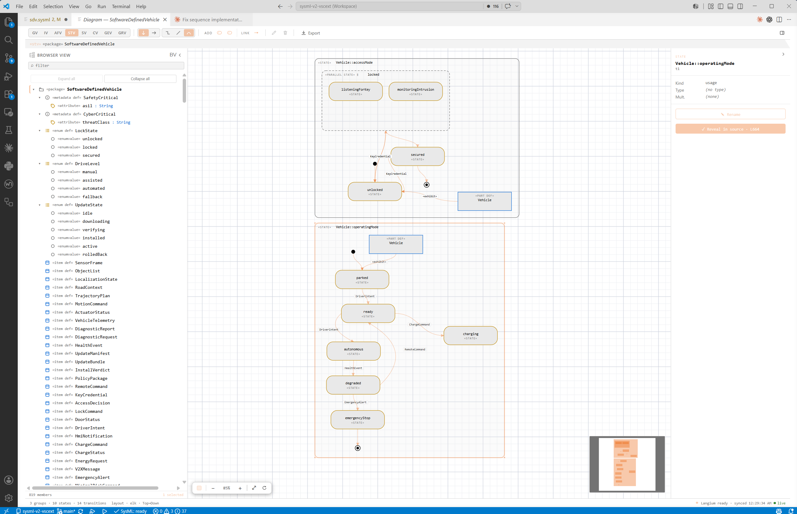
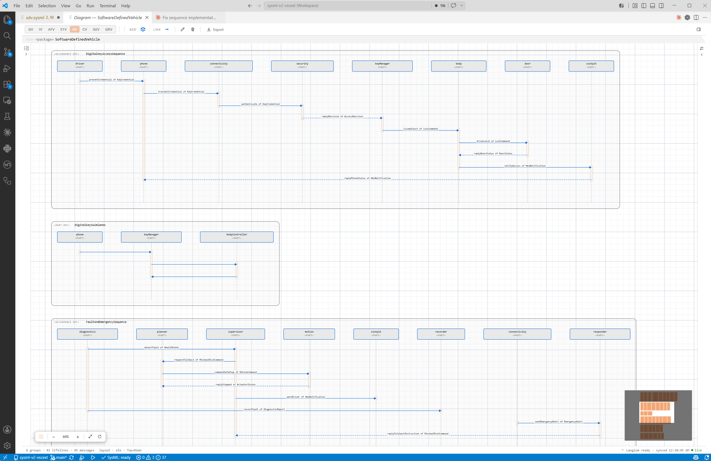
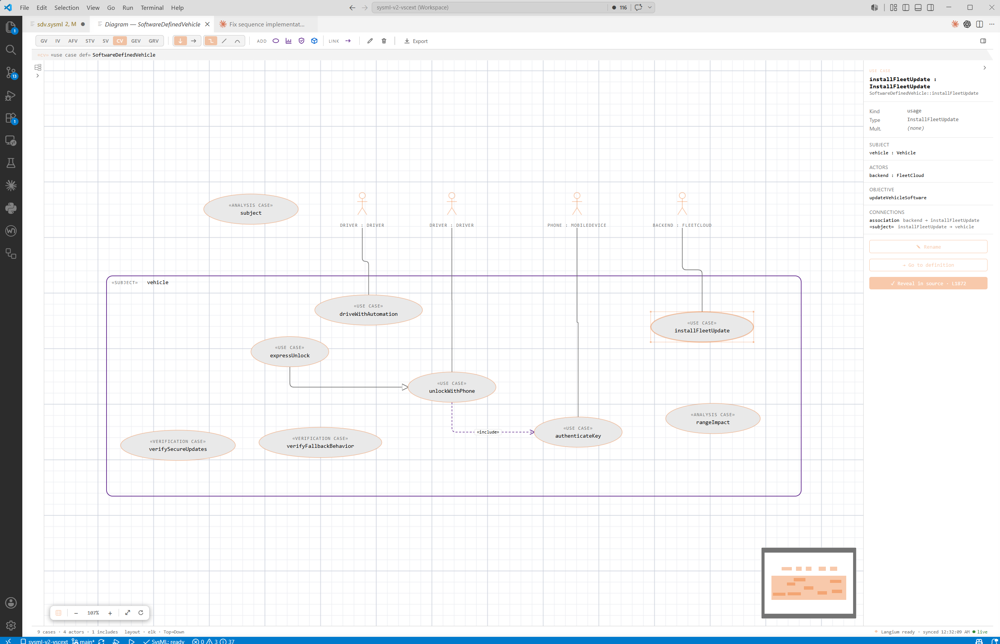

Complete language workbench
Syntax highlighting, semantic tokens, folding, outline, workspace symbols, hover, completion, signature help, inlay hints, and AST-based formatting for .sysml and .kerml.

Author SysML v2 and KerML with code-grade intelligence, then explore and edit the same model through live, native graphical views. Everything runs locally in VS Code.
The extension treats textual SysML as source code: parsed, indexed, formatted, refactored, traced, and visualized without a separate Java runtime or PlantUML server.
Syntax highlighting, semantic tokens, folding, outline, workspace symbols, hover, completion, signature help, inlay hints, and AST-based formatting for .sysml and .kerml.
Stable lexical, syntax, resolution, semantic, style, unit, and migration diagnostic families with configurable severities and mechanical quick fixes.
Go to definition, find references, document highlight, alias declaration lookup, and rename across workspace models and the read-only bundled standard library.
Requirement reference CodeLens, runnable verification cases, satisfy/verify tracing, dimensional checks, and an editable requirements Grid View with CSV export.
The official OMG SysML v2 release library is bundled and pre-indexed, including Systems, Kernel, Quantities and Units, Geometry, Analysis, Metadata, and Requirement Derivation.
VS Code language-model tools expose server-backed model context, draft validation, library search, symbol resolution, requirement tracing, and diagnostic explanation.

The public SDV sample exercises structure, behavior, requirements, cases, sequences, and geometry. Diagrams render locally on a React Flow canvas and write edits back through guarded language-server workspace edits.







The public sample workspace is ready for the extension: clone it, open any model, run SysML: Which Diagram?, and explore the same system as text, diagrams, and requirement data.
The guide walks through installation, cloning the sample workspace, using editor intelligence, selecting and editing diagrams, and sharing project-level defaults.
Install the current build from the VS Code Marketplace.
Open voidaliot/sysml-v2-samples and start with e-mountainbike.sysml or sdv.sysml.
SysML: Show DiagramSwitch between General, Interconnection, Action Flow, State Transition, Sequence, Case, Geometry, and Grid views.
Use diagram tools to add, connect, rename, resize, reconnect, or delete elements; the source remains the authoritative SysML text.
No telemetry, no hosted parser, no PlantUML service, no model upload. Source text, diagram side-cars, and project config stay in your repository.